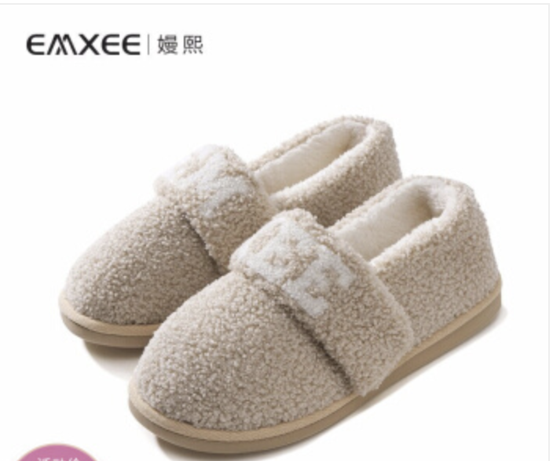
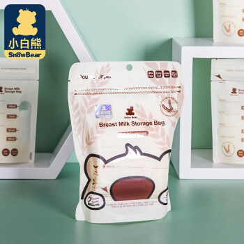
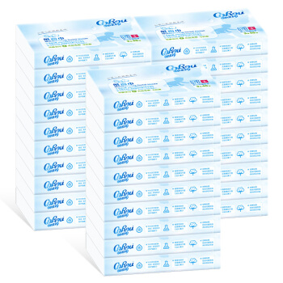

待产准备
参考：实用待产包全攻略：待产包清单+每件物品详解 对于每个孕妈妈们来说，到了孕中晚期的时候，就要开始准备待产包了。
可是待产包到底该准备哪些东西？
这是每个准妈妈都会遇到的问题：
-
买多了，浪费，而且还占地方；
-
买少了，万一有需要用到的没准备，到时候可能会耽误事情。
一、妇产医院待产证件
（1）宝爸宝妈双方身份证；
（2）宝妈医保卡；
（3）大白本；
（4）生育服务单；
二、需要带到医院里的
1、给准妈妈准备的
| 类别 | 名称 | 是否必备 | 说明 | 购买链接 |
|---|---|---|---|---|
| 衣物类 | ||||
| 包脚后跟拖鞋 | 必备 | 必须包脚后跟、必须防滑。 产妇生产后身体虚弱，不能吹一点风受凉，而脚也是非常容易受凉的一个部位，其实一个包脚后跟的拖鞋就能解决脚受凉的问题，但很多人都忽略了对脚的保护。 |
【京东自营】嫚熙(EMXEE)月子鞋秋冬厚底包跟产后孕妇鞋防滑保暖防风雪地靴家居鞋子MX791197003低帮藕粉S适合35/36码。京东价：￥58.99  | |
| 袜子 | 必备 | 最好是高腰的 防止脚受凉，即使是夏天，也要穿上薄袜子 |
||
| 衣服、帽子、围巾 | 必备 | 原则：防止吹风受凉。 产妇出院时要尽可能的把自己包裹严实，这里不是说一定要穿多厚，而是指在保证温度的前提下要包裹的全面，带上帽子，裹上围巾，即使是夏天，也要穿一件薄款外套。 即使是自驾，从出医院的门到上车只有几步路，也不要放松。产妇生产后本就虚弱，一旦受凉就会很麻烦，不要冒风险。 |
||
| 洗漱类 | ||||
| 牙刷、牙膏、牙具 | 必备 | 千万不要听一些“月子里不能刷牙”的老旧观念，无论何时我们都要保持每天刷牙的习惯。 在怀孕期间，准妈妈一定要注意自己的口腔问题，最好在怀孕前做一次口腔检查，有问题就早解决，千万别再怀孕期间出现口腔问题。“牙疼不是病，疼起来真要命”，一旦有了严重的口腔问题需要治疗，你说是打麻药还是不打麻药？ 另一方面，宝宝出生后，由于女性的生理影响，产妇牙齿会变得异常敏感，容易出现牙龈出血、水肿、牙齿松动等问题，所以一定要选择一款小巧的软毛牙刷，仔细保护好自己的牙齿。 |
狮王（Lion）D.HEALTH超软护理牙刷月子软毛牙刷 牙膏买过斯利安和十月天使这两款，我媳妇更喜欢十月天使的牙膏。 牙刷换的比较勤，后来一直用的狮王的软毛牙刷，非常非常软。 | |
| 毛巾、洗脸用品、脸盆 | 必备 | 洗脸也是什么时候都要洗的，注意洗面奶之类的选择孕妇能用的就好。同时最好带上一个脸盆，在不方便洗脸时可以让家人帮忙倒水擦脸。 | ||
| 洗手液 | 必备 | 在医院一住好几天，带上自己的洗手液，更方便点。 | ||
| 漱口水 | 推荐 | 如果新妈妈产后不能刷牙，可以先用漱口水代替；另外，很多新妈妈产后一天要吃多顿饭，除了早晚刷牙外，可以在每顿饭后用漱口水来保持口腔卫生。 |
推荐这两款
狮王（Lion）齿力佳酵素洁净防护漱口水450ml 孕妇适用 口腔护 邓特艾克 Dentyl Active 美人鱼清新口气深层清洁漱口水 |
|
| 卫生类 | ||||
| 产褥垫 | 必备 | 产妇生产时及产后排恶露后需要用到产褥垫，如果没有准备，到医院后医生也会让准备的。 这个可以多备点，产妇用不完可以给宝宝当隔尿垫用，不会浪费的。具体用多少，每个人情况不一样不能一概而论。 |
子初孕产妇护理垫产褥垫 成人老人婴儿一次性床垫隔尿垫月经垫10片*2包60*90cm 一般一包十片，可以先准备两包，然后如果发现不够的话再买也行，毕竟现在买东西也很方便。 |
|
| 大号卫生巾或产妇卫生巾 | 必备 | 产妇生产后除了会排恶露之外，在生产过程中也有可能会发生侧切或撕裂，所以需要准备些大号卫生巾或者产妇专用的卫生巾。 | 花王乐而雅（laurier）F透气棉柔纤巧超长量特多夜用卫生巾40cm 7片(日本原装进口) 拿了11片 | |
| 一次性马桶垫 | 必备 | 产妇生产后身体体抗力弱，有的还会有伤口，和别人共用一个卫生间可能会发生交叉感染。最好备上一次性马桶垫，干净卫生。 | 开丽 马桶垫一次性 产妇旅行加厚防水马桶套 6片*3包 马桶垫我媳妇当时用过子初的和开丽的，更加推荐开丽的，手感更佳 |
|
| 一次性内裤 | 必备 | 产后排恶露需要勤换内裤，如果家里有人帮忙换洗还好，如果家里人忙不过来可以准备些一次性内裤，卫生方便。 | 子初孕妇内裤纯棉一次性内裤卫生内裤8条 老婆买的子初的，觉得挺好的 |
|
| 会阴冲洗器 | 必备 | 虽然在医院护士会帮忙清洁，但是为了避免尴尬或者特别爱干净的宝妈，可以自己买一个自己冲洗外阴 |  |
|
| 哺乳类 | ||||
| 乳头膏 | 必备 | 宝宝刚出生时，虽然会有吸吮的本能，但是并没有掌握吸奶的要领，经常会吸不到奶。宝宝吸不到奶，就会吸的越来越用力，造成的结果就是发生乳头皲裂、出血。 所以这就需要准妈妈们用正确的哺乳方法去喂奶，一般医院都会有教。并且备上一只乳头膏，时常擦抹，预防乳头皲裂。 |
美德乐Medela羊脂膏乳头膏乳头修护霜羊毛脂孕妇护肤防皲裂膏7g
兰思诺(Lansinoh)乳头膏羊脂膏孕妇护肤乳头霜哺乳皲裂修护羊毛脂膏40ml装 老婆用的兰思诺 |
|
| 哺乳巾 | 必备 | 绝大部分医院，产妇住院时都是双人间或多人间，单人间需要排队或者压根就没有单人间，所以产妇生完宝宝后喂奶其实是一件多多少少很尴尬的事。 为了避免尴尬，可备一条哺乳巾，以后外出使用也方便。 |
babycare孕妇哺乳巾 外出哺乳遮挡衣喂奶遮羞布防走光披肩透气薄 |
|
| 哺乳文胸 | 必备 | 能使妈妈哺乳时更加方便 | ||
| 哺乳衣 | 推荐 | 一般产妇住院待产时，医院都会发衣服，不过发的就是医院普通的病号服。 医院的病号服一般来说，都不会特别的软、舒适，为产妇的舒适度考虑，建议带上一套哺乳衣，既舒适又方便，而且也是出院以后必备的东西。 不用担心医院会不会只让穿病号服，产妇最大。 |
||
| 防溢乳垫 | 推荐 | 给宝宝喂奶时，另一侧的乳房也会往外流乳汁；有时候即使没有在喂奶，乳房也会自动地往外分泌乳汁，容易弄湿衣服，滋生细菌。 所以防溢乳垫还有很有必要的。 |
美德乐Medela防溢乳垫乳贴溢奶垫隔乳垫一次性奶垫母乳垫透气款防溢乳垫我们家买过美德乐和子初的，媳妇说还是美德乐的更好，做工、细节很到位 | |
| 吸奶器 | 推荐 | 产妇生产后，就会开始逐渐分泌乳汁。如果分泌的乳汁过多，宝宝吃不完的话，乳汁就会在乳房内越聚越多，容易引起生理性涨奶。一旦发生生理性涨奶，会非常的疼，护理不好的话还有可能引起乳腺炎。 如果带了吸奶器的话，可以将乳房及时排空，预防生理性涨奶。所以准妈妈们不要嫌东西多，能带到医院还是带着比较好。 |
土豪可选美德乐，性价比高的选小白熊 吸奶器预算高的直接选美德乐就行了，不得不说，在吸奶哺乳这一块，无论是上文提到的乳头霜、防溢乳垫，还是现在说的吸奶器，美德乐做的确实专业，就是价格都不算便宜。 | |
| 储奶袋 | 推荐 | 搭配吸奶器使用，吸奶器吸完奶后放到储奶袋中储存，储奶时记得要排出袋里的空气。最好选择那种双封口的储奶袋，不易受污染。 | 储奶袋我家用的是小白熊 储奶袋我家用的是小白熊，没办法该省还是要省，不能什么都是美德乐[捂脸] | |
| 小确幸类 | ||||
| 弯头吸管杯 | 必备 | 小小的一根弯头吸管，对于产妇而言却当属神器。无论是产前还是产后，当产妇身体虚弱无法起身时，一扭头就可以喝到温热的水，真的非常方便。 | babycare一次性吸管 孕妇 产后独立装月子喝水透明长弯头吸管 吸管我们没有买那种一次性的，买的这款玻璃的，是不是颜值很高 | |
| 保温杯 | 必备 | 随时准备好温水给准妈妈喝，尽量不要喝凉水。 | 膳魔师（THERMOS）进口不锈钢保温杯壶 推荐膳魔师的保温杯，保温效果非常好，且杯子长期使用无异味。 | |
| 好吃好喝的 | 必备 | 别误会，这是给准妈妈们进产房待产时准备的，进产房前该忌口的还是要忌口。 产妇生产时需要消耗大量的能量，所以一定要在生产前保持体内有充足的能量。拿一包好吃的好喝的进待产室，准备吧！ |
临产前宜进食含糖类、蛋白质和维生素的高营养食物，如蛋糕、肉粥、藕粉、点心、果汁、牛奶、橘子、香蕉等，而且要找准时机，最好在宫缩间歇期进食。 医生不建议巧克力和红牛，容易影响孩子心跳。 |
|
| 生活类 | ||||
| 抽纸、卫生纸 | 必备 | 准备点柔软、无香的就行了。 | 全棉时代 棉柔巾婴儿棉柔巾洗脸巾一次性洗面巾宝宝擦脸巾干湿纯棉柔巾 100抽/包 6包 因为在医院用得少，为了舒服，暂时用婴儿的。 |
|
| 饭盒 | 推荐 | 有的医院在产妇生产完后，会为新妈妈们准备几天的月子餐，是为产妇特殊定制的有利于恢复、利于产奶的饭菜。 |
2、给宝宝准备的
| 类别 | 名称 | 是否必备 | 说明 | 购买链接 |
|---|---|---|---|---|
| 衣物类 | ||||
| 衣服 | 必备 | 新生儿长的会很快，前期其实不用给宝宝准备太多衣服，给宝宝准备3套最小号的就差不多了。
衣服材料最好选择纯棉的，不容易造成宝宝过敏。衣服款式建议选择开身的那种，不要选择套头的，开身衣服更便于给宝宝更换纸尿裤及清洗屁屁。 |
给我家宝宝当时买的衣服 |
|
| 肚兜 | 必备 | 肚兜主要是为了防止宝宝肚子着凉，尤其是给宝宝换纸尿裤的时候。同时，在宝宝出生后脐带还未脱落的时候，要保持脐带干燥，给宝宝穿个肚兜也能对脐带起到额外保护。 | 全棉时代婴儿纱布微厚肚围肚兜宝宝护肚子神器2条装 信封飞鸽+昼夜 55cm×12cm | |
| 包被 | 必备 | 包被可以为刚出生的宝宝模拟妈妈子宫的环境，让宝宝更有安全感。同时在带宝宝外出时，用来包裹宝宝。 | 南极人(Nanjiren) 婴儿抱被纯棉春秋新生儿宝宝 | |
| 帽子 | 必备 | 防止宝宝头部着凉。宝宝出生后那一两天，要抱着宝宝离开病房去打疫苗和做听力、视力检查，以及宝宝出院回家的时候，最好给宝宝带上帽子防止吹风受凉。 | 我家宝宝的帽子 | |
| 毛巾、手帕 | 必备 | 建议准备4条以上，分别用作口水巾、洗脸巾、洗屁屁巾、擦屁屁巾，专布专用。如果觉得带这么多到医院麻烦分不清，在医院时可以先用婴儿棉柔巾和湿巾代替。
擦屁屁巾要一直保持干燥，是给宝宝洗完屁屁以后擦干用的，宝宝洗完屁屁后一定要擦干后再穿纸尿裤，要不然非常容易红屁屁。 |
||
| 尿不湿 （纸尿裤） |
必备 | 20片 | babycare 皇室弱酸纸尿裤 NB34片 (<5kg) 新生儿小号尿不湿 弱酸亲肤 3D丝柔 | |
| 袜子 | 推荐 | 给宝宝准备两双小袜子，防止脚部受凉。 | ||
| 洗护类 | ||||
| 婴儿湿巾 | 必备 | 湿巾一般用来给宝宝擦手、擦嘴、擦屁屁，不要给宝宝使用普通的湿巾，而要使用专门的婴儿湿巾。这主要是因为普通的湿巾添加物比较多，容易造成宝宝皮肤过敏，而且很多都含有酒精或者荧光剂，这些都是不能给宝宝使用的。 | babycare 婴儿手口湿巾 新生儿湿纸巾 宝宝带盖抽纸擦脸棉湿巾3150 80抽-10包 | |
| 婴儿棉柔巾 | 必备 | 宝宝皮肤娇嫩、敏感，最好给宝宝准备专门的婴儿纸巾，这类的纸巾的好处是不会掉屑，而且特别柔软，沾水不容易破，而且因为宝宝非常爱吃纸，最好选择那种无添加、有食品级认证的纸巾。 | 可心柔（COROU） 可心柔V9保湿抽纸便携式外出3层40抽30包宝宝婴儿纸巾柔纸巾整箱量贩  | |
| 护臀膏 | 必备 | 预防宝宝红屁屁，在每次给宝宝换纸尿裤时，在清洗完宝宝的屁屁之后，一定要擦干或者晾干，然后涂上护臀膏再穿上新的纸尿裤。 | 德国进口拜耳贝乐欣（Bepanthen）新生儿宝宝护臀膏屁屁霜 100g/支 我家一直用的是拜耳的贝乐欣，很不错 | |
| 洗澡盆 | 必备 | 不需要带浴网 | ||
| 洗脸盆、洗屁屁盆 | 必备 | 给宝宝准备两个小盆，分别用来洗脸和洗屁屁。 | ||
| 棉签 | 必备 | 给宝宝护理肚脐用。宝宝出生后需要过一段时间脐带才会脱落，在此期间要保持脐带干燥并且每天要用棉签蘸酒精或者碘伏消毒，这个一定要多多上心护理好，一旦没护理好发炎会很麻烦。 | 十月结晶碘伏棉签一次性新生儿肚脐带棉棒孕产妇双头棉签 单盒36支 用于给婴儿消毒，强调无菌。建议购买一小袋4个那种包装，这样每次使用4个，保证未使用的棉签是无菌的。 | |
| 婴儿沐浴液、洗发水 | 推荐 | 宝宝出生后第二天或者第三天，很多医院会安排给宝宝洗澡、做抚触，需要用到沐浴液、洗发水和抚触油，如果没有带需要再专门去买，所以最好这些东西都带着。 | 松达 沐浴露 洗发水 婴儿洗发沐浴二合一 弱酸护肤低泡无硅油 300ml | |
| 抚触油 | 必备 | 松达 婴儿抚触山茶油 新生儿按摩油 宝宝护肤润肤 50ml |
||
| 护臀霜 | 必备 | 用的松达的 | ||
| 润肤油 | 必备 | 用的松达的 | ||
| 吃喝类 | ||||
| 奶瓶 | 推荐 | 宝宝出生后，妈妈有可能需要过一两天才会有奶水，不过宝宝刚出生的前两三天其实不喝奶也可以。所以要不要带奶瓶、奶粉看个人选择吧，我那时候刚开始没打算带，不过我妈强烈要求我带，说万一出奶晚怎么办，最后我就带了。 | 贝亲(Pigeon) 奶瓶 玻璃奶瓶 宽口径玻璃奶瓶 硅橡胶保护层 彩绘奶瓶 SS号奶嘴 160ml（树）00533CH 给宝宝选奶瓶，当时我家也挑了好久，最后查资料得出还是玻璃材质的好。 我家用的是上面这款，价位算是比较高了，没办法，颜值高媳妇喜欢[捂脸]~ |
|
| 奶粉 | 推荐 | |||
| 奶瓶清洁剂 | 必备 | 如果选择带上奶瓶，那就最好把奶瓶的清洗用品一块带上。 咱们大人平常刷锅洗碗时都知道要尽量少用洗洁精之类的化学物质，那么给婴儿洗奶瓶餐具时就更不能用洗洁精了。可以选择一些婴儿专用的植物性奶瓶清洗剂，不含有化学添加物，安全有效。 | 贝亲(Pigeon) 奶瓶清洗剂 餐具清洗剂 奶瓶奶嘴清洗液 植物性原料 400ml MA26 | |
| 奶瓶刷 | 必备 | 贝亲 (Pigeon) 奶嘴刷 海绵奶嘴刷 宽口奶嘴刷 奶嘴清洁 04534 | ||
| 安全类 | ||||
| 婴儿安全提篮 | 必备 | 适用年龄：0～15个月，用到宝宝大概13公斤 婴儿安全提篮，是专为新生儿设计的儿童安全座椅。婴儿安全提篮与其他儿童安全座椅主要的区别是在于婴儿安全只能反向安装。 一般是半平躺设计，半平躺设计与反向安装配合可以更好的保护宝宝的安全，因为当宝宝反向乘坐遇到撞击时，斜躺着的宝宝背部受力面积更大，能很大程度的减少身体其他部位压力，将伤害减低。 |
3、准爸爸需要准备的
三、提前买好放家里的
1、宝妈需要的
妈妈需要的哺乳类用品，除了上面介绍过的哺乳巾、哺乳衣、哺乳文胸、防溢乳垫外，还需要准备下面这些：
| 类别 | 名称 | 是否必备 | 说明 | 购买链接 |
|---|---|---|---|---|
| 哺乳类 | ||||
| 哺乳枕 | 必备 | 哺乳枕太有用了，这个强烈建议大家要准备一个！
妈妈哺乳最好的方式是坐着哺乳，不建议躺着哺乳。但是坐着哺乳需要抱着宝宝，别看宝宝刚出生时只有几斤，抱着时间长了也会非常累，更何况宝宝前期会长的非常快。 我们之前并没有准备这个，是宝宝出生后媳妇的妹妹给她寄来了一个这个哺乳枕。这不用不知道，一用就离不开了，太解放了。 |
乐孕哺乳枕喂奶枕头婴儿背带靠枕学坐枕抱娃神器 | |
| 其他 | ||||
| 会阴冲洗器 | 推荐 | 这个其实在孕期就可以开始用了，很实用的东西。建议40摄氏度的温水 |
马博士（DOCTOR MA）冲洗器妇洗器产妇月子用品会阴私处便携式清洗器婴儿宝宝洗屁股洗屁屁清洁器
|
2、宝宝需要的
| 类别 | 名称 | 是否必备 | 说明 | 购买链接 |
|---|---|---|---|---|
| 衣物类 | ||||
| 衣服 | 必备 | 按照上面第一部分的准备就可以了 | ||
| 肚兜 | 必备 | |||
| 包被 | 必备 | |||
| 帽子 | 必备 | |||
| 毛巾手帕 | 必备 | |||
| 袜子 | 必备 | |||
| 吃喝类 | ||||
| 奶瓶 | 必备 | 按照上面第一部分的准备就可以了 | ||
| 奶粉 | 必备 | |||
| 奶瓶清洗剂 | 必备 | |||
| 奶瓶刷 | 必备 | |||
| 小勺小碗 | 必备 | 当需要用奶瓶给宝宝喂奶时，有的宝宝一开始会拒绝奶瓶，这时候可以先用小碗小勺给宝宝喂，等宝宝接受奶瓶后再用奶瓶。
而且一般都要给宝宝补充益生菌，也会用到小碗小勺，所以最好提前准备好。 |
贝亲(Pigeon)婴儿餐具套装(辅食碗(2只装) 带盖子+勺子(2只装)+收纳盘+托盘)宝宝儿童餐具 6个月以上 DA40 | |
| 维生素D3 | 必备 | 维生素D是促进钙吸收的重要保障，宝宝成长发育期对维生素D的需求很大，如果维生素D不足就有可能会生长缓慢、肋骨外翻、多汗夜惊、头发枕秃、O型腿、抵抗力弱等情况。
美国儿科学会营养建议，0-3岁的宝宝每天应补充400-800IU的维生素D。 母乳中维生素D含量很低，远远达不到宝宝生长发育的要求，所以需要额外补充维生素D。 |
||
| 洗护类 | ||||
| 纸尿裤 | 必备 | 除了上面第一部分介绍的外，还需要准备下面这些留着家里用 | ||
| 婴儿湿巾 | 必备 | |||
| 婴儿纸巾 | 必备 | |||
| 护臀膏 | 必备 | |||
| 洗脸盆 | 必备 | |||
| 洗屁屁盆 | 必备 | |||
| 棉签 | 必备 | |||
| 婴儿沐浴液 | 必备 | |||
| 婴儿洗发水 | 必备 | |||
| 抚触油 | 必备 | |||
| 磨指甲器、剪指甲刀 | 必备 | 宝宝指甲长的很快，而且宝宝也爱用手去挠自己的脸，所以需要经常给宝宝剪手指甲。但宝宝太小也爱动，不好给他剪，也不能用咱们大人的指甲刀去给宝宝剪，可以选择专用的婴儿指甲剪或者电动磨甲器。 | ||
| 洗澡盆 | 必备 | 一般天气热的时候，可以每1、2天给宝宝洗一次澡；天气冷的手，可以5、6天洗一次。注意在选择洗澡盆时，要选择环保材质的，并且最好是带有排水孔的，这样给宝宝洗完澡后，就不要再费体力倒水了。 | OKBABY 婴儿洗澡盆 意大利进口 婴儿浴盆 意大利进口  我家用的是OKBABY的这款洗澡盆，也是挑选了很久最后定下来的，主要是材质安全、设计结构合理。
这个价格不算便宜，但是一想能给宝宝用好几年，就好像没那么贵了[捂脸]~ 我家用的是OKBABY的这款洗澡盆，也是挑选了很久最后定下来的，主要是材质安全、设计结构合理。
这个价格不算便宜，但是一想能给宝宝用好几年，就好像没那么贵了[捂脸]~ |
|
| 浴巾 | 必备 | 宝宝洗完澡后一定要注意保暖，从澡盆里出来时用浴巾裹住宝宝防止着凉。建议选择棉布或纱布的浴巾，柔软并且吸水性好，减少对宝宝皮肤的摩擦。 | ||
| 保湿霜 | 必备 | 宝宝的皮肤还未发育完全，皮肤的角质层很薄，保水能力相对较差，容易丢失水分皮肤干燥。皮肤如果过于干燥，防护能力就会减弱，外界的病原体等微生物就容易钻进皮肤中，造成皮肤过敏发炎，最常见的就是湿疹。所以一定要注意宝宝皮肤的保湿，定时给宝宝涂抹保湿霜、润肤露等保湿产品。 | 艾惟诺(Aveeno) 儿童润肤乳身体乳面霜 宝宝面霜护肤 儿童面霜润肤露 原产地随机发货 227g 美国品牌 | |
| 婴儿洗衣液、婴儿洗衣皂 | 必备 | 宝宝的衣服要和大人的分开洗，并且要选用儿童专用的洗衣液或者洗衣皂。这是因为一般的洗衣液中其实都含有一些高风险成分，比如表面活性剂椰油酰胺DEA、防腐剂MIT、CIT、三氯生等，这些成分容易引起皮肤过敏、红肿发炎，甚至有的会干扰内分泌系统和生殖系统。
大人的抵抗力高，还可以抵御这种风险，但儿童尤其是婴儿皮肤还未发育完全，抵抗力很弱，所以最好给宝宝选择成分安全、性能温和的洗衣产品。 |
保宁 B&B 婴幼儿洗衣皂 洋甘菊味 韩国原装进口 200g*3 | |
| 湿疹膏 | 推荐 | 治疗湿疹用。宝宝皮肤幼嫩，皮肤的防御机制还未发育成熟，很容易受到外界细菌的感染，产生湿疹。如果出现湿疹，就需要涂抹湿疹膏来治疗。这类湿疹膏一般都不便宜，可以趁有活动时提前备点。 | 京儿 肤乐霜湿痒膏 婴亲霜 婴儿润肤乳 儿童面霜 婴宝润肤霜 多效护理面霜 护臀膏 15g 我家湿疹膏一直用的是京儿的肤乐霜，很管用，宝宝起湿疹后抹一两天就会起效，很快就会消掉。价格不算便宜，我都是趁有活动时囤几个。 | |
| 睡眠类 | ||||
| 婴儿床 | 推荐 | 虽然宝宝和妈妈一块睡，能方便照顾宝宝，但其实这样会增加宝宝夜醒的频次，并且大人翻身也有可能会压到宝宝。所以不管别人怎么说，我是建议宝宝和妈妈分开睡的。
婴儿床一般都需要晾味，建议提前购买。 |
我买的二手的 | |
| 婴儿床垫 | 推荐 | 如果买婴儿床的话，还需要一块婴儿床垫。有的床会搭配送一块床垫，有的不会就需要自己单独够买了。床垫选购这块其实也很有讲究，最好选择那种环保安全、无胶水无甲醛的。 | ||
| 出行类 | ||||
| 婴儿车 | 推荐 | 婴儿车是家庭必备的东西，这个不一定要在宝宝出生前买。但挑选一辆婴儿车也是一个挺费劲的活，我家当时就挑了好久终于在双十一前选了一个赶上了优惠。建议有时间的话可以提前做做功课，等618或双十一时入手划算。 | 关于如何挑选婴儿车，可以看看我的这篇文章，万字长文，通俗易懂的介绍了该如何选择婴儿车，相信每个人看了后都能成为婴儿车挑选小能手哈哈： 婴儿车/婴儿推车怎么选、哪个品牌好？看这篇就够了~婴儿车品牌介绍 + 性价比推荐 |
|
| 亲子类 | ||||
| 黑白卡 | 必备 | 宝宝刚出生时的视力还没有发育好，喜欢看一些轮过鲜明、深浅颜色对比强烈的图形，而黑色和白色是最强烈的对比色，所以最适合给新生宝宝看。经常给宝宝看黑白卡，有助于宝宝视力的发育，同时锻炼宝宝眼睛的追视能力。 |
海润阳光·宝宝视觉激发·升级版：（套装共4盒）新生婴儿黑白卡片婴儿早教闪卡 宝宝视觉追视大卡 彩色卡 [0-2岁]
注意，2个月以前宝宝的最佳注视距离是15-25厘米，太近或太远都看不清楚。而且，如果宝宝当时不愿意看，千万不玩勉强，可以换个时间再给宝宝看。
强烈推荐海润阳光的黑白卡，安全不伤手、不怕撕、不怕咬，京东上满100减50最后大概是50左右。 我家宝宝对这个是爱不释手，自己一个人能玩好久～ |